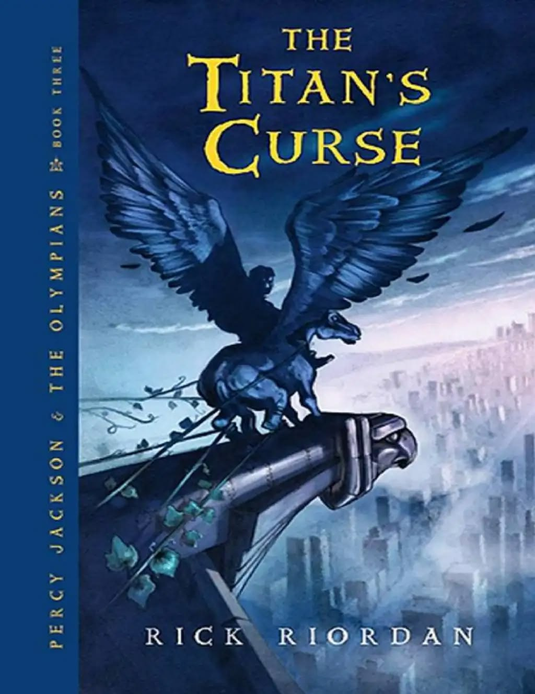

Percy Jackson e os Olimpianos
Nova Temporada confirmada!
A 3ª temporada de Percy Jackson e os Olimpianos foi oficialmente confirmada pelo Disney+ e já está em produção. A nova fase da série será baseada em A Maldição do Titã, terceiro livro da saga escrita por Rick Riordan, e promete expandir ainda mais o universo dos semideuses, introduzindo personagens muito aguardados pelos fãs, como Nico di Angelo, Bianca di Angelo e as Caçadoras de Ártemis. A estreia está prevista para dezembro de 2026.
Nos novos episódios, Percy enfrentará ameaças ainda mais perigosas ligadas aos Titãs, enquanto a influência de Cronos começa a crescer e o clima de guerra entre os deuses se torna cada vez mais inevitável. A temporada deve adaptar uma das fases mais sombrias e importantes da história original, trazendo um tom mais maduro e emocional para os personagens. Rick Riordan afirmou que essa será uma “nova experiência para as telas”, já que muitos elementos do livro nunca foram adaptados anteriormente.
As gravações já começaram em Vancouver, no Canadá, local utilizado também nas temporadas anteriores. Segundo informações divulgadas pela produção, a série continuará buscando uma adaptação fiel aos livros, algo muito elogiado pelos fãs desde a estreia da primeira temporada em 2023. O elenco principal, formado por Walker Scobell, Leah Sava Jeffries e Aryan Simhadri, retorna para interpretar Percy, Annabeth e Grover.
Além do sucesso entre os fãs, a série também conquistou números expressivos de audiência e diversas indicações a premiações, tornando-se uma das produções originais mais assistidas do Disney+. O anúncio antecipado da 3ª temporada, antes mesmo da estreia completa da segunda, demonstra a confiança da Disney no crescimento da franquia e no impacto da saga para uma nova geração de espectadores.
Saga Percy Jackson
